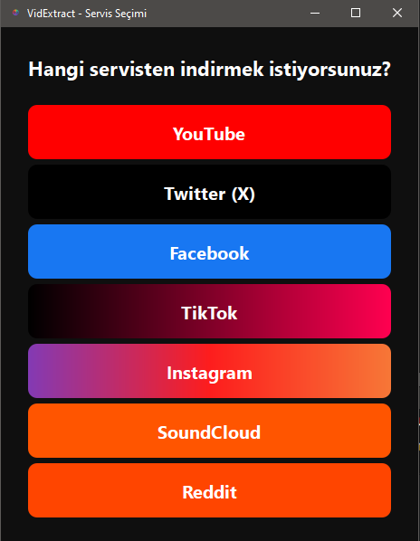
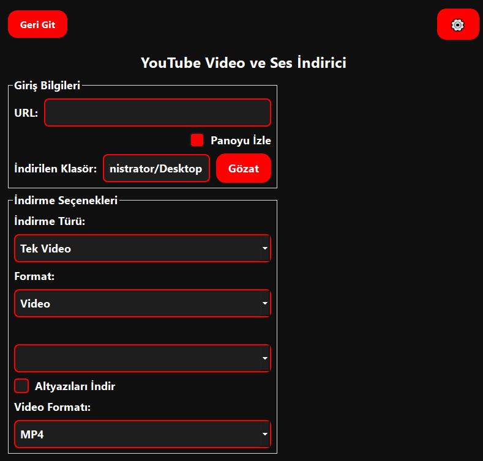
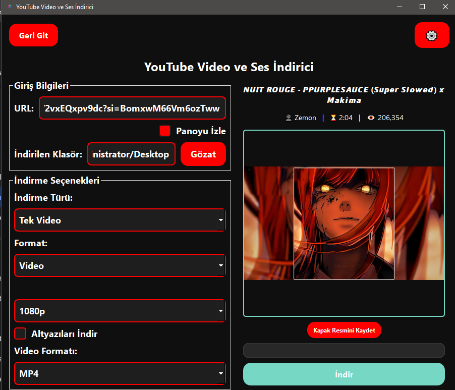
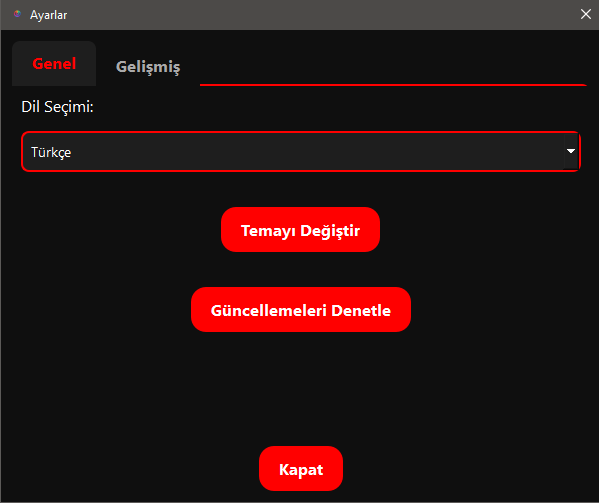

Çoklu platform
YouTube, Reddit, X/Twitter, Instagram, TikTok, SoundCloud ve daha fazlası.
Çok platformlu video/ses indirme aracı — modern masaüstü UI ve otomatik FFmpeg kurulumu.
VidExtract; YouTube, Reddit, Instagram, TikTok ve benzeri platformlardan video/ses indirmenizi hedefleyen, PySide6 tabanlı modern bir masaüstü uygulamasıdır. Kullanım kolaylığı için akıllı pano izleme, çoklu dil desteği ve otomatik FFmpeg yapılandırması gibi özellikleri öne çıkarır.
YouTube, Reddit, X/Twitter, Instagram, TikTok, SoundCloud ve daha fazlası.
Kopyalanan URL’leri algılayıp otomatik doldurma.
10+ dil desteği (örn. TR/EN/ES/DE/FR/RU/AR/ZH).
FFmpeg tespit/indirme/yapılandırma akışı.
4K/8K video ve yüksek kalite ses dönüşümü seçenekleri.
YouTube playlistlerini tek seferde indirme.
Desktop UI (PySide6) ├─ URL input + service selection ├─ Download options (video/audio, quality, format) ├─ Progress/logging view └─ Settings (general/advanced) Core ├─ yt-dlp: extraction + download ├─ FFmpeg: post-processing / audio conversion ├─ Settings manager: persistent preferences └─ Logger: structured logs for debugging



